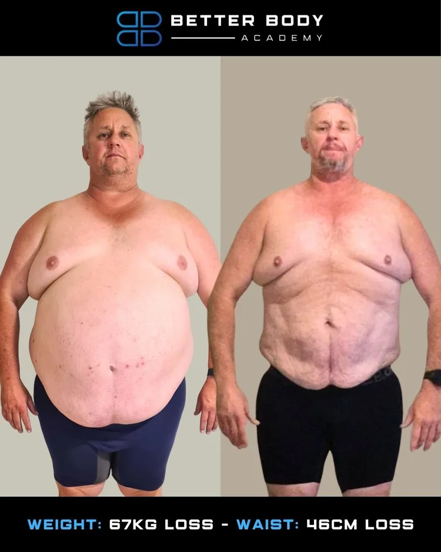
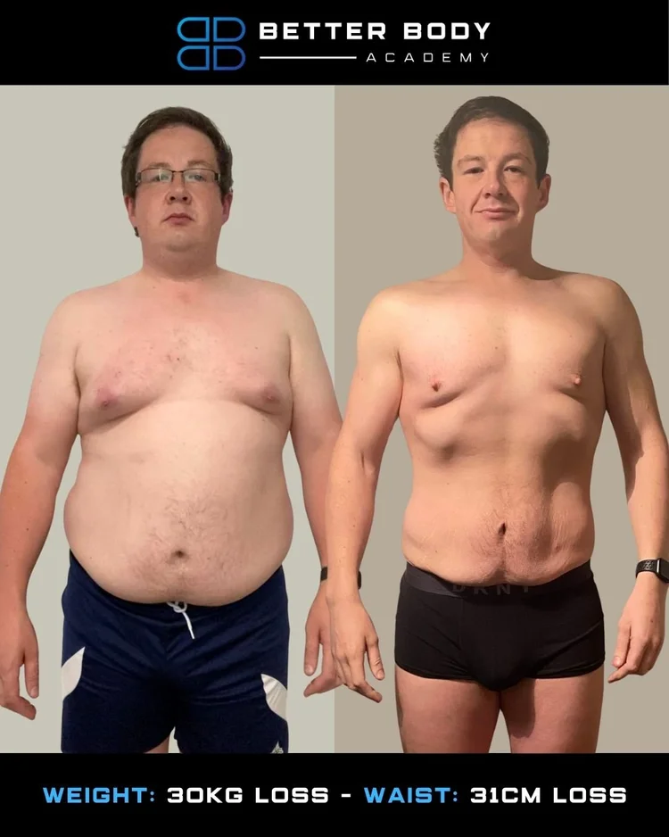
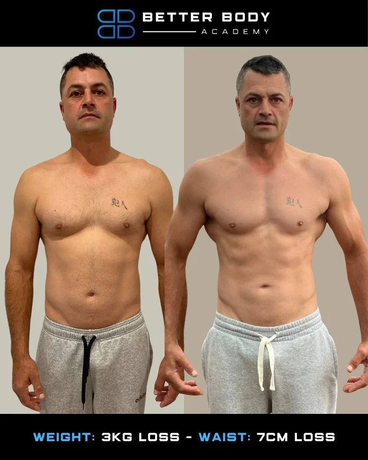
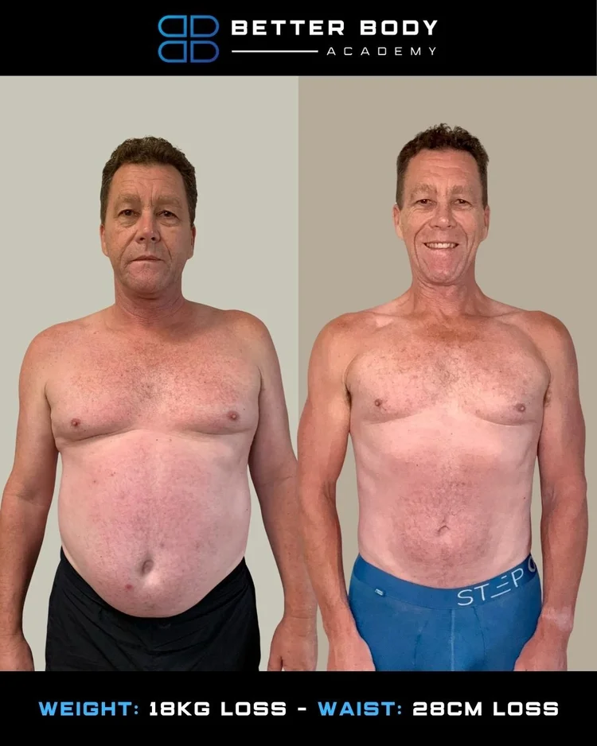
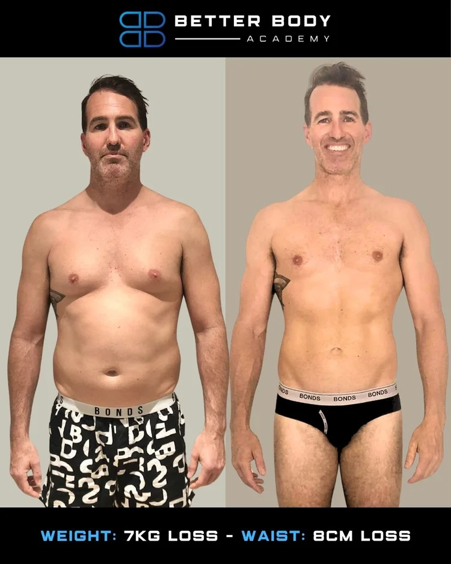
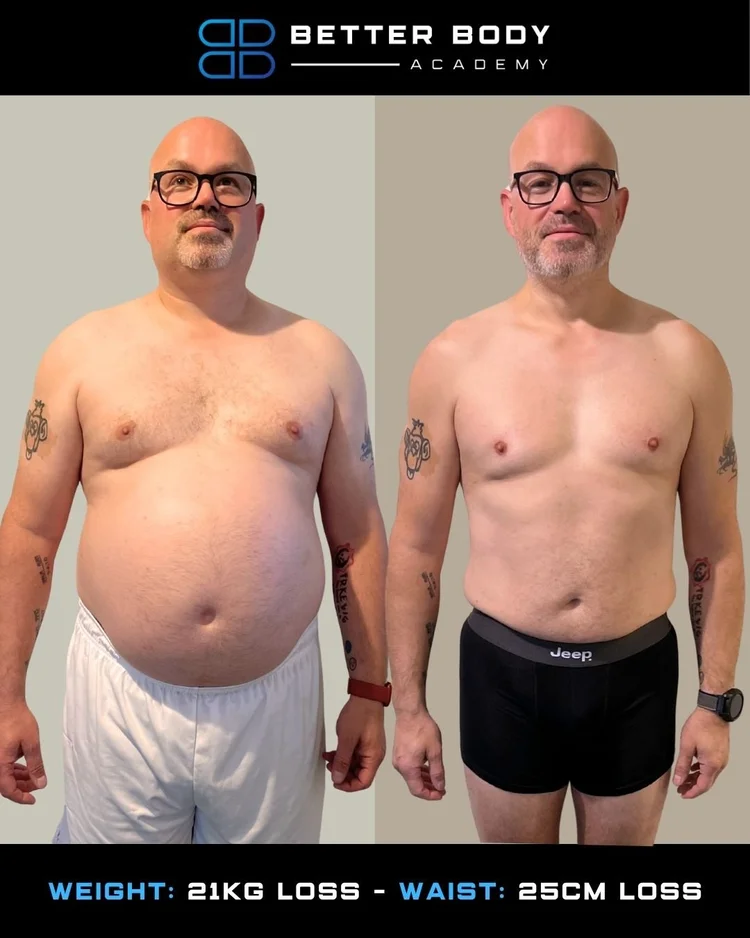

.png)
We built it that way. 4,000+ transformations and counting. Let me show you how.
The Proof
Real men, real lives, real results. No photoshoots. No cherry-picked outliers. Just what happens when the system is built right.













"Down 18kg in 6 months. I finally have the energy to keep up with my kids — and my wife noticed before I did."
Why nothing has worked
Work, family, and everything else gets prioritised. By 8pm you've got nothing left. Programs that demand two hours a day weren't built for your week.
You go hard for two weeks. Life gets busy. You fall off. You restart with more guilt than last time. The cycle is the problem, not your willpower.
Keto. Carnivore. Cutting carbs. They work for three weeks then fall apart the second you travel or eat with your family. Restriction isn't a strategy.
You used to bounce back from a bad night. Now one late call derails your whole week. Training, eating well, showing up — it all feels harder than it should.
You're not vain. You're frustrated. You know what you used to look like. You know what's possible. You just haven't found the right system yet.
Your kids are watching. Your partner notices. You want to be the dad who shows up with energy, not the one who's tired on the sideline.
The System
We don't reinvent anything. We just build a version of it that actually works around your life.

Who's behind this
I'm a registered dietitian and personal trainer. I've been coaching men like you for over a decade. Not men who live in the gym. Men with careers, families, and real lives who want a real result.
I built Better Body Academy because every program I saw was built for someone else. Too much time. Too many restrictions. Zero accountability. So I built the one I wish existed when I was starting out.
4,000+ men later, the system hasn't changed. It just gets sharper every year.
Straight From The Group
Our Reviews
"Before the academy, I was 38 and felt like I was 58. Work had taken over and my fitness had gone out the window. Within the first three months I lost 10 kilos, gained a stack of muscle, and felt fantastic. Eight months later I'm still holding the same weight and the same muscle."
Brent Thoroughgood
"I've tried a lot of diets and couldn't shift the weight. 23 weeks into the Better Body Academy, I've lost around 22 kilos and 24 centimetres off the gut. Can't thank Jason and his team enough — if you're thinking about changing your life, this is the place to be."
Terry Holden
"12 months ago I was around 100 kilos, hadn't been to the gym in 20 years, work was taking over my life. Since joining BBA I'm down to 81 kilos, back at the gym, kayaking, playing golf. I feel fantastic, I've got better work-life balance and I'm never going back. Grateful for Jase and the BBA, highly recommend joining."
Alex Render
"I joined the Better Body Academy just over a year ago wanting to lose 10 to 15 kilos for my wedding. A year on I'm sitting at 68 kilos, over 30 kilos less than when I started. The community here is so powerful, you're never alone. If you're sitting on the fence, don't hesitate — get in, take your life by the horns."
Balraj Singh
"I'm Chris, 46, from the Central Coast of New South Wales. 18 months in the BBA and I've lost over 65 kilograms and around 46 centimetres off the waist. The best thing about the group is the community feel — supported and encouraged the whole way. If you're sitting on the fence thinking about joining, what are you waiting for? Come and change your life for the better."
Chris Lupton
"18 weeks in the BBA Academy and I've lost 12 kilos and over 20 centimetres around my waist. It's changed my mindset and my way of life — I'm more focused on myself now. The best part of this program is the brotherhood; my fellow members support each other every step of the way. If I was going to recommend this program, I would highly recommend it."
John J
The stuff blokes ask before they sign up. Straight answers, no fluff.
That's why we built it. The reason you've failed before isn't you — it's that every program you've tried was built for someone whose life looks nothing like yours. We start with the reality of your week, not a fantasy version of it.
Then you're exactly who this is built for. Short, focused sessions. Meals that don't require meal-prepping on Sunday like a gym bro. The whole system is designed around men with careers, families, and limited hours.
No. No extreme diets. You'll eat real food, drink the occasional beer, and still get leaner every week. If a coach tells you a food is 'bad,' they're selling you religion, not results.
We've coached both ends of that spectrum and everyone in between. The system doesn't change based on how much you have to lose — the timeline does.
That's a chat for your GP. What I'll tell you is this: quick fixes lead to quick failures. The weight comes back the second you stop. You're not broken because you haven't found the right pill — you're stuck because you haven't built a system.
No — this page is the men's program. Women should check out the women's side, coached by Carly and Erin. The physiology's different and we don't do one-size-fits-all.
You've read enough. You already know which of the six pain points hit. The application's two minutes. A coach reads every one.